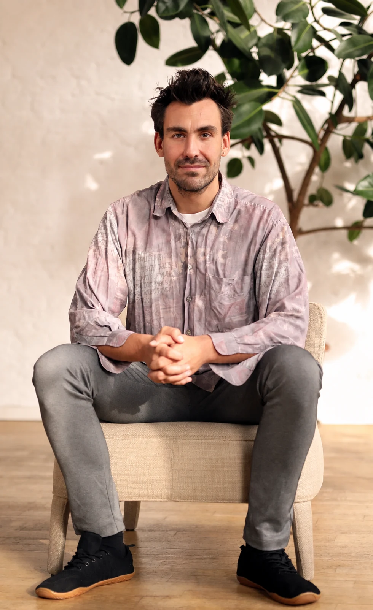

Gut in der Sache, unscharf im Auftritt
Du kannst viel. Es in einem Satz so zu sagen, dass eine Personalentwicklerin oder ein Geschäftsführer sofort versteht, wofür sie Dich brauchen, ist etwas anderes.
Du bist Trainer oder Coach und arbeitest mit Organisationen. In sieben persönlichen Coachings klären wir, was Dich für die richtigen Auftraggeber sichtbar macht: Deine Positionierung, Dein Angebot und einen Weg, auf dem Aufträge zu Dir finden. Dabei entsteht mit KI Deine Website, Seite für Seite.
Sieben Sessions à 90 Minuten, in Deinem Tempo über rund vier Monate. Am Ende steht Deine Website.

Du weißt, was in einem Raum voller Menschen möglich ist. Du hast Teams begleitet, Führungskräfte trainiert, Workshops getragen. Wenn Organisationen jemanden wie Dich suchen, sollen sie Dich finden, verstehen und beauftragen können. Genau daran arbeiten wir.
Du kannst viel. Es in einem Satz so zu sagen, dass eine Personalentwicklerin oder ein Geschäftsführer sofort versteht, wofür sie Dich brauchen, ist etwas anderes.
Empfehlungen tragen Dich. Planbar ist das nicht, und Du suchst Dir die Aufträge selten selbst aus.
Mehrere Menschen entscheiden mit, jede Rolle hat ihre eigene Frage. Ein Auftrag entsteht aus einem konkreten Anlass. Wer dann nach Dir sucht, sollte schnell verstehen, wofür Du stehst.
Eine klare Marke gibt Dir Freiheit. Du weißt, wofür Du stehst, wen Du ansprichst und was Du anbietest. Dadurch kannst Du bewusster entscheiden, welche Aufträge Du annimmst, und musst nicht jeden nehmen, der gerade kommt.
Warum mir das wichtig ist
Ich arbeite seit Jahren mit Organisationen, die sich verändern. Dabei sehe ich, wie viel von den Menschen abhängt, die Teams begleiten, trainieren und coachen. Und ich sehe, wie oft gerade sie ihre eigene Sichtbarkeit hintenanstellen.
Vor einer Weile habe ich mit dem VENTURE Programm Entrepreneure und Freelancer dabei begleitet, ihre Marke aufzubauen. Für VENTURE B2B habe ich das Programm auf die Arbeit mit Organisationen ausgerichtet.
Das zentrale Ergebnis von VENTURE B2B ist Deine Website. Wir bauen sie Stück für Stück, Unterseite für Unterseite, mit KI. Jeder Schritt verbindet Nachdenken mit Bauen: Was wir in der Session klären, wird direkt zu einer Seite, die Du lesen, prüfen und anderen zeigen kannst.
Wir denken gemeinsam nach: Was willst Du, was macht Dich aus, wen willst Du erreichen? Mit Fragen, im Gespräch und mit Material, an dem Du weiterarbeitest.
Aus der Reflexion werden Entscheidungen: ein Satz, eine Zielgruppe, ein Angebot. Klar genug, um darauf zu bauen.
Mit KI setzen wir jede Entscheidung in eine Seite Deiner Website um. Du siehst sofort, ob sie trägt, und wir schärfen nach. Dabei lernst Du, selbst mit KI an Deiner Website weiterzuarbeiten.
So arbeite ich auch an meiner eigenen Website: nachdenken, entscheiden, bauen, nachschärfen. Eine Seite, die Du vor Dir siehst, zeigt schneller als jedes Konzept, ob ein Gedanke trägt.
Wir beginnen bei Dir: wohin Du willst und was Dich ausmacht. Dann schauen wir auf Deine Zielgruppe, bauen Dein Angebot, prüfen es im Gespräch mit echten Entscheidern und entwickeln ein System, über das Aufträge zu Dir finden. Zum Schluss halten wir fest, was sich bewährt hat. Jeder Schritt ist eine Session und bringt einen Baustein Deiner Website hervor. Dazwischen arbeitest Du mit dem Material weiter.
Ein Buchstabe pro Schritt. Klick auf einen, um direkt hinzuspringen.
Wohin willst Du, und welchen Wert schaffst Du für Organisationen?
Ergebnis: Ein klares Bild Deiner Richtung und Deines Werts für Auftraggeber.Für Deine WebsiteAbout-Seite. Deine Geschichte, Deine Vision und wofür Du stehst.
Was macht Deine Arbeit unverwechselbar, und wie sieht und klingt das?
Ergebnis: Ein Positionierungssatz und ein erstes Referenzportfolio.Für Deine WebsiteLook and Feel und Brand Guide. Farben, Schriften, Bildsprache und Tonalität, festgehalten für alle weiteren Seiten.
Für wen arbeitest Du, und in welchen Momenten wirst Du gebraucht?
Ergebnis: Ein Profil Deiner Zielgruppe mit ihren Anlässen und Entscheidern.Für Deine WebsiteStartseite. Sie spricht Deine Zielgruppe und ihre Anlässe direkt an.
Wie sieht ein Angebot aus, das Organisationen leicht beauftragen können?
Ergebnis: Deine Angebotsarchitektur mit Preislogik und eine Angebotsvorlage.Für Deine WebsiteAngebotsseiten. Einstiegsformat, Kernprogramm und Begleitung, jeweils mit eigener Seite.
Was beschäftigt Entscheider wirklich?
Meilenstein: Zehn Gespräche geführt und ausgewertet. Danach weißt Du, ob Dein Angebot trägt und was Du schärfen musst.Für Deine WebsiteReferenzseite und geschärfte Texte. Du zeigst Entscheidern Deine Seiten und überarbeitest sie mit ihrem Feedback.
Wie entstehen Gespräche, aus denen Aufträge werden?
Ergebnis: Ein Akquise-System, das in Deinen Alltag passt.Für Deine WebsiteKontaktseite und LinkedIn. Ein klarer Weg ins Erstgespräch, Dein LinkedIn-Profil passend dazu.
Was hat sich verändert, und wie geht es weiter?
Ergebnis: Ein Plan, mit dem Du ohne mich weitermachst.Für Deine WebsiteBereit für den Start. Deine Website ist vollständig, und Du weißt, wie Du sie mit KI selbst weiterentwickelst.
Sieben Sessions à 90 Minuten, eine pro Schritt. Jede ist auf Deine Situation zugeschnitten.
Etwa alle zwei Wochen eine Session. Wenn Aufträge dazwischenkommen, verschieben wir. Der Weg passt sich Deinem Kalender an.
Zu jedem Schritt Material aus dem VENTURE Programm. Damit Du zwischen den Sessions selbst weiterkommst.
Deine Website, Seite für Seite gebaut. Dazu Positionierungssatz, Brand Guide, Angebotsarchitektur mit Vorlage, Erkenntnisse aus zehn Gesprächen mit Entscheidern und Dein Akquise-System.
In einem Vorgespräch schauen wir, wo Du gerade stehst. Hast Du schon Kunden und willst Dich schärfen, liegt der Schwerpunkt auf Angebot und Akquise. Baust Du das B2B-Geschäft neu auf, nehmen wir uns für die ersten Schritte mehr Zeit.
Alle zwei Wochen eine Session, aus jeder entsteht ein Stück Deiner Website. Dazwischen arbeitest Du mit dem Material und an Deinen Seiten. Nach jedem Modul gibst Du mir kurz Rückmeldung, was Dir geholfen hat und was fehlt.
Nach der letzten Session schauen wir gemeinsam darauf, was sich verändert hat. Dann entscheidest Du, was Dir das Coaching wert war.
Mit VENTURE habe ich bisher Gründer und Freelancer begleitet. Im B2B-Bereich ist das Programm neu, und Du bist einer der Ersten, die es durchlaufen. Deshalb machen wir es anders als üblich: Du wählst Deinen Einstiegspreis selbst.
Was ich mir im Gegenzug wünsche
Das alles halten wir vor dem Start kurz schriftlich fest, damit wir beide wissen, woran wir sind.
Sieben Einzelcoachings, Deine Website mit KI, Material zu jedem Schritt
rund 200 € pro Session · zzgl. 19 % USt.
Öffnet eine E-Mail an mich. Wir klären alles persönlich, bevor es losgeht.
robin@robin-hotz.com
Seit zehn Jahren begleite ich Unternehmen bei Visions- und Strategiearbeit. Ich verbinde Visual Facilitation, Systemdenken und Organisationsentwicklung.
In VENTURE B2B bringe ich drei Dinge zusammen: den Blick von innen, wie Organisationen sich verändern und Unterstützung suchen, die Erfahrung aus dem VENTURE Programm, wie Menschen ihre eigene Marke aufbauen, und meine Praxis, mit KI an einer Website zu arbeiten.
Du kennst Deine Arbeit am besten. Ich stelle die Fragen, die Dir helfen, sie klar zu benennen, und halte den roten Faden, damit aus sieben Sessions ein Weg wird.
Mehr über meinen WegJa. Dann fallen die ersten beiden Schritte eher kurz aus, und wir legen mehr Gewicht auf Angebot, Gespräche mit Entscheidern und Akquise. Baust Du Dein B2B-Geschäft gerade erst auf, ist es umgekehrt. Das klären wir im Vorgespräch.
Nein. Wir bauen die Seiten gemeinsam, und Du lernst unterwegs, wie Du mit KI an ihnen arbeitest. Ziel ist, dass Du Texte und Seiten danach selbst anpassen kannst.
Ja. Je nachdem, was sinnvoller ist, bauen wir auf ihr auf oder ersetzen sie Stück für Stück. Das klären wir im Vorgespräch.
Dann verschieben wir. Vier Monate sind ein Richtwert. Wichtiger ist, dass Du zwischen den Sessions Zeit für das Material hast.
Ja, sie sind der Meilenstein des Programms. Erst im Gespräch mit Entscheidern zeigt sich, ob Dein Angebot ihre Fragen trifft. Wir bereiten die Gespräche gemeinsam vor und werten sie zusammen aus.
Du startest mit der Anzahlung, die Du oben gewählt hast. Nach Schritt 7 schauen wir gemeinsam zurück. Danach entscheidest Du, ob und wie viel Du noch dazugibst. Es gibt keine Erwartung, die Du erfüllen musst.
Ich nutze sie, um VENTURE B2B weiterzuentwickeln und anderen zu zeigen, wie das Programm wirkt. Veröffentlicht wird nur, was Du vorher gesehen und freigegeben hast.